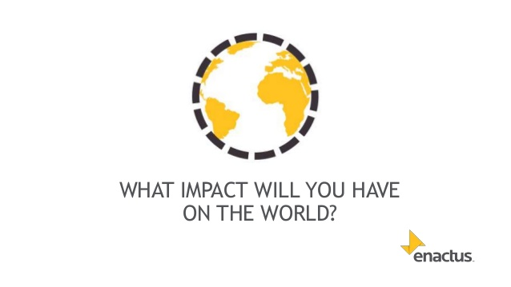

Enactus FUTO is one of the most recognized Enactus teams in Nigeria,
with a team strength of over 100 talented student members and volunteers,
dedicated academic and business leaders. Enactus FUTO has been National
champions twice.

OUR MILESTONES
Aside being a two-time Enactus National Competition Champion, the Enactus
team from the Federal University Of Technology, Owerri has recorded giant
strides in the areas of healthcare, education, agriculture, energy generation
and much more.
Waste Management
Through the initiative of a school wide sanitation exercise, the team brought to
life the trueness of waste to wealth, by creating a sustainable business from
waste water sachets. The sanitation exercise of the team has also been incorporated
by the school management thus providing more conducive learning environments.
Education
The team through her project has been able to form the Enactus FUTO Business Academy which runs mentorship
programme for budding entrepreneurs and delivers trainings and workshops to help youths secure seed funding
to kick tart their own businesses.
Awards
IndiAfrica Business Award
Awarded 50,000 rupees as one of the top 20 business Ideas in the 2014 IndiAfrica competition for the Making entrepreneur project.
Teach A Man To Fish Award
presented to the fisher project in 2012Sahara Group’s Light up Nigeria Award for her innovative solar initiative under the Energy Green Project.
Most innovative project
Presented by interswitch at the 2012 National Competition.
Most Environmentally Sustainable Project
First Hydrocarbon Nigeria Limited’s award for Most Environmentally Sustainable Project presented at the 2013 Enactus Nigeria National Competition.